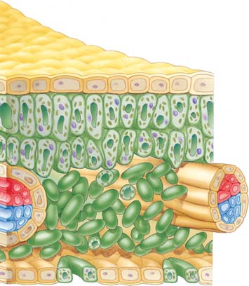
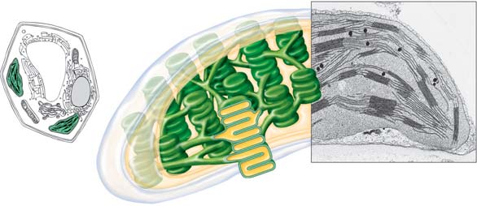
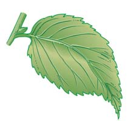
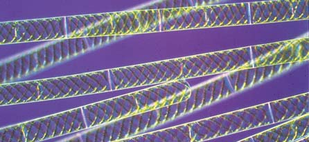
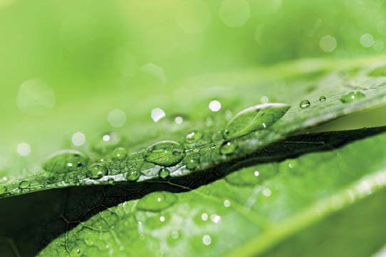
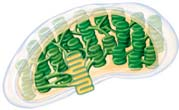
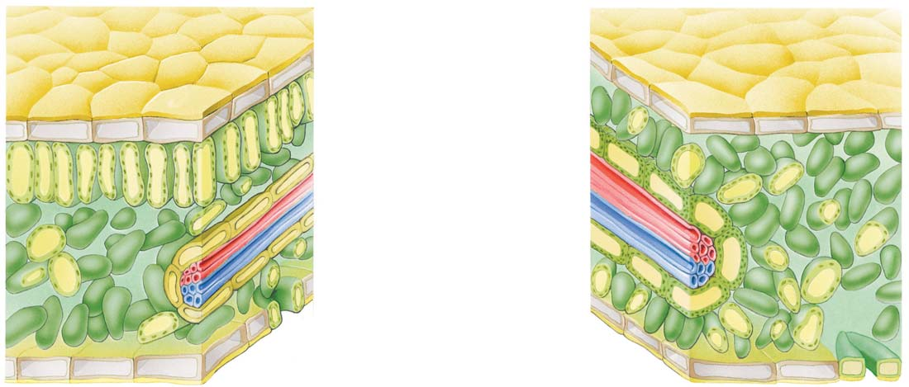
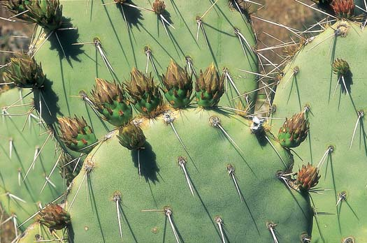
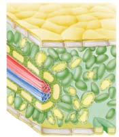

9 Fotosíntesis: captura de energía luminosa
193
CONCEPTOS CLAVE
9.1 La energía luminosa activa la fotosíntesis, que es esencial para las plantas y para la mayor parte de la vida sobre la Tierra. 9.2 La fotosíntesis ocurre en los cloroplastos y requiere el pigmento clorofi la. 9.3 La fotosíntesis es un proceso redox. 9.4 Las reacciones que dependen de la luz convierten la energía luminosa a energía química en forma de moléculas de NADPH y ATP. 9.5 Las reacciones de fi jación de carbono incorporan CO 2 en las moléculas orgánicas. 9.6 La mayoría de los organismos fotosintéticos son fotoautótrofos. 9.7 La fotosíntesis es importante para las plantas y también para otros organismos.
O
bserve los organismos vivos que lo rodean, los árboles, su mascota pez-dorado, su propio cuerpo. La mayor parte de esa biomasa está hecha de moléculas biológicas que contienen carbono. ¿Cuál es la principal fuente de ese carbono? Sorpresivamente para algunos, esta fuente es el dióxido de carbono del aire. Aunque sus células no pueden tomar dióxido de carbono del aire para incorporarlo en las moléculas orgánicas, algunas células vegetales sí pueden hacerlo. Ellas realizan esto mediante la fotosíntesis , una secuencia de eventos donde la energía luminosa es convertida en energía química que se almacena en las moléculas orgánicas. La fotosíntesis es el primer paso del fl ujo de energía que ocurre a través de la mayor parte del mundo con vida, capturando gran cantidad de la energía que utilizan los organismos vivos. La fotosíntesis no sólo sustenta a las plantas (vea la fotografía) y a otros organismos fotosintéticos como las algas y bacterias fotosintéticas, sino que también sustenta de forma indirecta a gran parte de los organismos no fotosintéticos tales como animales, hongos, protozoarios, y la mayor parte de las bacterias. Cada año los organismos que realizan la fotosíntesis convierten el CO 2 del aire en miles de millones de toneladas de moléculas orgánicas. Estas moléculas tienen dos importantes funciones tanto en los organismos fotosintéticos como en los no fotosintéticos: constituyen en ambos los componentes estructurales de las células y, como se vio en el capítulo 8, también son una fuente de energía química para realizar las reacciones metabólicas que sustentan casi toda la vida. Mediante la fotosíntesis también se libera O 2 , que es esencial en la respiración celular aeróbica, proceso utilizado por plantas, animales, y gran parte de otros organismos para convertir esta
Fotosíntesis. Estos árboles utilizan la energía de la luz solar para realizar los procesos que incorporan el CO 2 a las moléculas orgánicas.
© tbkmedia.de/Alamy
194 Capítulo 9
energía química en moléculas de ATP necesarias para impulsar diferentes procesos celulares. En este capítulo primero se examina cómo se emplea la energía luminosa en la síntesis de ATP y de otras moléculas que poseen energía química temporalmente pero que no se pueden almacenar en la célula por su inestabilidad. Luego, se ve cómo se utiliza esta energía del ATP en la ruta anabólica mediante la cual la célula fotosintética sintetiza moléculas orgánicas estables a partir de CO 2 y agua, un par de compuestos inorgánicos simples. Por último, se explora la importancia de la función de la fotosíntesis en las plantas y en el ambiente terrestre en general.
9.1 LUZ Y FOTOSÍNTESIS
OBJETIVO DE APRENDIZAJE
1 Describir las propiedades físicas de la luz y explicar la relación entre la longitud de onda y su energía.
Debido a que gran parte de la vida en este planeta depende de la luz, directa o indirectamente, es importante entender la naturaleza de ella y su esencial participación en la fotosíntesis. La luz visible representa una pequeña parte del amplio rango de radiación continua llamado espectro electromagnético ( FIGURA 9-1 ). En este espectro toda la radiación viaja como ondas. La longitud de onda es la distancia entre el pico de una onda y el de la próxima. En un extremo del espectro electromagnético están los rayos gamma, con longitudes de onda muy cortas, que se miden en fracciones de nanómetros, o nm (1 nanómetro es igual a 10 − 9 m, una mil millonésima parte de un metro). En el otro extremo del espectro se encuentran las ondas de radio, cuyas longitudes de onda son tan largas que pueden medirse en kilómetros. La franja del espectro electromagnético con longitud de onda entre 380 y 760 nm se llama espectro visible, ya que los humanos pueden verlo. El espectro visible incluye todos los colores del arco iris ( FIGURA 9-2 ); el violeta tiene la longitud de onda más corta, y el rojo la más larga. La luz está compuesta de pequeñas partículas, o paquetes de energía, llamados fotones . La energía de un fotón es inversamente proporcional a su longitud de onda: la luz con menor longitud de onda tiene más energía por fotón que la luz con mayor longitud de onda. ¿Por qué la fotosíntesis depende de la luz que detecta el ojo humano (luz visible) más que de alguna otra longitud de onda de radiación? Sólo se puede especular la respuesta. Quizás la razón es que la radiación dentro de la franja visible del espectro excita ciertos tipos de moléculas biológicas, moviendo electrones hacia altos niveles energéticos. La radiación con longitudes de onda mayores que la luz visible no tiene sufi ciente energía para estimular a esas moléculas biológicas. La radiación con longitudes de onda menores que la luz visible es tan energética que rompería los enlaces de muchas moléculas biológicas. Así, la luz visible tiene justamente la correcta cantidad de energía para producir los tipos de cambios reversibles en las moléculas que son útiles en la fotosíntesis. Cuando una molécula absorbe un fotón de energía luminosa, uno de sus electrones queda energizado, lo que signifi ca que el electrón se transfi ere de un orbital atómico de baja energía a otro orbital de alta energía más alejado del núcleo atómico. Entonces pueden presentarse dos situaciones para este electrón, dependiendo del átomo y sus alrede-
dores ( FIGURA 9-3 ). El átomo puede retornar a su estado fundamental, condición en la que todos sus electrones se encuentran en sus niveles normales de más baja energía. Cuando un electrón regresa a su estado fundamental, su energía se disipa como calor o como emisión de luz con longitud de onda más grande que en la luz absorbida; esta emisión de luz se llama fl uorescencia . Alternativamente, el electrón energizado puede abandonar el núcleo y ser capturado por una molécula aceptora de elec-
FIGURA 9-1 Animada El espectro electromagnético Todas las ondas del espectro electromagnético tienen propiedades similares pero difi eren en sus longitudes de onda. Las ondas de radio son las de mayor longitud de onda (y las menos energéticas), con valores cercanos a los 20 km. Las ondas de los rayos gamma son las de menor longitud de onda (y las más energéticas). La luz visible representa una pequeña fracción del espectro electromagnético y consiste en una mezcla de ondas cuya longitud de onda está en el rango entre 380 y 760 nm. La fotosíntesis utiliza la energía de las ondas de la luz visible.
760 nm
700 nm
600 nm
500 nm
400 nm 380 nm
Rojo
Amarillo
Verde
Azul
Violeta
Ondas de TV y radio
Microondas
Infrarrojo
UV
Rayos X
Rayos gamma
Espectro electromagnético
Longitud de onda más larga
Longitud de onda más corta
Longitud de onda
Visible
Espectro cromático de la luz visible
Anaranjado
Sol
La luz solar es una mezcla de ondas con diferente longitud de onda
FIGURA 9-2 Radiación visible emitida por el Sol La radiación electromagnética del Sol incluye la radiación ultravioleta y la luz visible de diversos colores y longitudes de onda.
Fotosíntesis: captura de energía luminosa 195
buido en la célula sino que está confi nado a orgánulos llamados cloroplastos. En las plantas, los cloroplastos están principalmente dentro de la hoja en las células del mesófi lo , una capa con múltiples espacios de aire y una muy alta concentración de vapor de agua ( FIGURA 9-4a ). El interior de la hoja intercambia gases con el exterior mediante poros microscópicos, llamados estomas . Cada célula mesófi la tiene de 20 a 100 cloroplastos. El cloroplasto, como la mitocondria, está rodeado por las membranas externa e interna ( FIGURA 9-4b ). La membrana interna encierra una región llena de fl uido llamada estroma , que contiene la mayor parte de las enzimas requeridas para producir moléculas de carbohidrato. En el estroma está suspendido un tercer sistema de membranas que forma un conjunto interconectado de sacos planos discoidales llamados tilacoides . La membrana del tilacoide forma un espacio interior lleno de fl uido, la luz del tilacoide . En algunas regiones del cloroplasto, los sacos ti lacoides están acomodados en pilas o montones de nombre grana o granos. Cada grana se parece a una pila de monedas y cada “moneda” es un tilacoide. Algunas membranas tilacoides se extienden de una grana a otra. Las membranas tilacoides, como las membranas mitocondriales internas (vea el capítulo 8), están implicadas en la síntesis de ATP. (Las procariotas fotosintéticas no tienen cloroplastos, pero con frecuencia las membranas tilacoides se acomodan alrededor de la periferia celular como repliegues de la membrana plasmática).
La clorofi la se localiza en la membrana del tilacoide
Las membranas tilacoides contienen varios tipos de pigmentos , que son sustancias que absorben luz visible. Distintos pigmentos absorben luz de diferentes longitudes de onda. La clorofi la , el pigmento fundamental de la fotosíntesis, absorbe luz sobre todo en las regiones azul y rojo del espectro visible. La luz verde no es apreciablemente absorbida por la clorofi la. Las plantas por lo común son verdes porque parte de la luz verde les incide, se dispersa o se refl eja. Una molécula de clorofi la tiene dos partes importantes, una estructura de anillo y una larga cadena lateral ( FIGURA 9-5 ). La estructura anular, llamada anillo de porfi rina , se compone de pequeños anillos de átomos de carbono y nitrógeno; el anillo de porfi rina absorbe energía luminosa. El anillo de porfi rina de clorofi la es muy similar a la parte o grupo hemo del pigmento rojo de hemoglobina en los glóbulos rojos de la sangre. Sin embargo, a diferencia del grupo hemo, que contiene un átomo de hierro en el centro del anillo, la clorofi la tiene un átomo de magnesio en esa posición. La molécula de clorofi la también contiene una larga cadena lateral hidrocarbonada que hace a la molécula extremadamente no polar que la fi ja a la membrana. Todas las moléculas de clorofi la que se encuentran en la membrana del tilacoide están asociadas a ella, mediante proteínas de unión a clorofi la ; los biólogos han identifi cado alrededor de 15 diferentes tipos. Cada membrana del tilacoide está llena de moléculas de clorofi la con una orientación precisa para absorber la luz y de proteínas de unión a clorofi la que facilitan la transferencia de energía de una molécula a otra. Existen varios tipos de pigmentos de clorofi la. El más importante es la clorofi la a , que inicia las reacciones dependientes de luz en la fotosíntesis. La clorofi la b es un pigmento accesorio que también participa en la fotosíntesis. Difi ere de la clorofi la a sólo en el grupo funcional unido al anillo de porfi rina: el grupo metilo ( O CH 3 ) en la clorofi la a se reemplaza en la clorofi la b por un grupo carbonilo terminal ( O CHO). Esta
trones, la cual queda reducida en el proceso; esto es lo que sucede en la fotosíntesis. Ahora que ya se entienden algunas de las propiedades de la luz, se considerarán los orgánulos que utilizan luz para realizar la fotosíntesis.
Repaso
■ ¿Por qué la fotosíntesis requiere luz visible?
■ ¿Qué color de luz tiene mayor longitud de onda, el violeta o el rojo?
■ ¿Qué color de luz tiene mayor energía por fotón, el violeta o el rojo?
9.2 CLOROPLASTOS
OBJETIVOS DE APRENDIZAJE
2 Dibujar la estructura interna de un cloroplasto y explicar cómo interactúan sus componentes para facilitar el proceso de fotosíntesis. 3 Describir qué le ocurre a un electrón en una molécula biológica como la clorofi la, cuando ésta absorbe un fotón de energía luminosa.
Si se examina una sección del tejido de una hoja al microscopio, puede verse que el pigmento verde, la clorofi la, no está uniformemente distri-
El fotón es absorbido por un electrón excitable que se mueve a un nivel de energía más alto.
Fotón
Electrón
El electrón puede retornar al estado fundamental emitiendo un fotón menos energético.
El electrón puede ser aceptado por una molécula aceptora de electrones.
Nivel de baja energía
Nivel de alta energía
Ya sea O
Molécula aceptora de electrones
FIGURA 9-3 Interacciones entre la luz y átomos o moléculas ( Arriba ) Cuando un fotón de energía luminosa choca con un átomo o a una molécula de la cual el átomo es una parte, la energía del fotón puede empujar a un electrón hacia un orbital más alejado del núcleo (es decir, en un nivel energético más alto). ( Abajo a la izquierda ) Si el electrón regresa al nivel de energía más bajo (más estable), entonces se puede liberar la energía como un fotón menos energético con mayor longitud de onda, conocido como fl uorescencia ( que se observa ), o como calor. ( Abajo a la derecha ) Si hay aceptores de electrones disponibles, el electrón puede abandonar el átomo. Durante la fotosíntesis, un aceptor de electrones captura al electrón energizado y lo transfi ere a una cadena de aceptores.
196 Capítulo 9
o indirectamente por la energía transferida de los pigmentos accesorios que han sido excitados por la luz. Cuando una molécula carotenoide es excitada, su energía se puede transferir a la clorofi la a . Además, los carotenoides son antioxidantes que desactivan formas altamente reactivas del oxígeno generado en los cloroplastos.
La clorofi la es el principal pigmento fotosintético
Como se ha visto, la membrana del tilacoide contiene varios tipos de pigmento. El instrumento llamado espectrofotómetro mide la capacidad relativa de uno o diferentes pigmentos para absorber las distintas longitudes de onda de la luz. El espectro de absorción de un pigmento es una gráfi ca de la absorción de diferentes longitudes de onda de luz. La FIGURA 9-6a muestra los espectros de absorción de las clorofi las a y b .
diferencia cambia el rango de longitudes de onda de la luz que absorbe y refl eja la clorofi la b , confi riéndole una coloración amarillo-verdosa, mientras que la clorofi la a es verde brillante. Los cloroplastos tienen otros pigmentos fotosintéticos accesorios, tales como los carotenoides , que son amarillo y anaranjado (vea la fi gura 3-14). Los carotenoides absorben longitudes de onda de luz diferentes a las absorbidas por la clorofi la, expandiendo así el espectro de luz que proporciona energía para la fotosíntesis. La clorofi la puede ser excitada directamente mediante la energía proveniente de una fuente luminosa,
Estoma
Espacio de aire
1 μ m
Luz del tilacoide Membrana del tilacoide Espacio intermembranoso
Membrana exterior Membrana interior Estroma
E. H. Newcomb and W. P. Wergin, Biological Photo Service
Grana (pila de tilacoides)
Mesófilo esponjoso
Mesófilo en empalizada
Vena
Este corte transversal de la hoja revela que el mesófilo es el tejido fotosintético. El CO 2 entra a la hoja a través de minúsculos poros o estomas, y las venas llevan el H 2 O al mesófilo.
En el cloroplasto, los pigmentos necesarios para las reacciones de captura de luz forman parte de las membranas tilacoides, mientras que las enzimas para la síntesis de moléculas de carbohidrato están en el estroma.
FIGURA 9-4 Animada El lugar de la fotosíntesis
FIGURA 9-5 Estructura de la clorofi la La clorofi la consiste en un anillo de porfi rina y una cadena lateral hidrocarbonada. El anillo de porfi rina, con un átomo de magnesio en su centro, contiene un sistema alternativo de enlaces simples y dobles; por lo común se encuentran en moléculas que absorben fuertemente ciertas longitudes de onda de luz visible y refl ejan otras (la clorofi la refl eja el verde). Observe que arriba a la derecha, en el diagrama, el grupo metilo ( O CH 3 ) distingue a la clorofi la a de la b , que tiene un grupo carbonilo ( O CHO) en esta posición. La cadena lateral hidrocarbonada es de carácter hidrófobo y fi ja la clorofi la a la membrana del tilacoide.
HC CH 3
CH 2
CH
C
C C
N C
H C
C
N
C
C
C
Mg CH HC
N C
C
C
C
C
N
C
C
C
C
H 3 C
H 3 C
H H
CH 3
CHO
CH 2 CH 3
CH 3
CH 2
CH 2
C
O
CH 2
CH
C
CH 2
CH 2
CH 2
HC
CH 2
CH 2
CH 2
CH 2
CH 2
CH 2
CH
H 3 C CH 3
Anillo de porfirina (absorbe luz)
HC
C
O
CH 3
O
C O
O
CH 3
CH 3
en clorofila b
en clorofila a
Cadena lateral hidrocarbonada



Fotosíntesis: captura de energía luminosa 197
Engelmann expuso estas células al espectro de colores que se produce por el paso de la luz a través de un prisma. Él formuló la hipótesis de que si la clorofi la fuera innegablemente el pigmento responsable de la fotosíntesis, el proceso ocurriría con más efi ciencia en aquellas áreas del cloroplasto que fueran iluminadas con los colores mejor absorbidos por la clorofi la.
Un espectro de acción de la fotosíntesis es una gráfi ca de la efi ciencia relativa de este proceso con distintas longitudes de onda de la luz. Para obtener un espectro de acción, los científi cos miden la tasa de efi ciencia fotosintética , en cada longitud de onda, para células vegetales o en tejidos expuestos a luz monocromática (luz de una longitud de onda determinada)( FIGURA 9-6b ). En un experimento clásico de biología, el biólogo alemán T. W. Engelmann obtuvo el primer espectro de acción en 1883. El experimento de Engelmann, descrito en la FIGURA 9-7 , aprovechó la forma de los cloroplastos en una especie del alga verde Spirogyra . Sus largas hebras fi lamentosas se encuentran en hábitats de agua dulce, especialmente en aguas quietas o de fl ujo lento. Cada célula de Spirogyra contiene un largo cloroplasto verde-esmeralda en espiral, inmerso en el citoplasma.
Longitud de onda (nm)
20
40
60
80
100
500 400 600 700
Absorción estimada (%)
Clorofila b
Clorofila a
- Las clorofilas a y b absorben las longitudes de onda de la luz principalmente en las regiones azul (422 a 492 nm) y roja (647 a 760 nm).
Longitud de onda (nm)
20
40
60
80
100
500 400 600 700
Tasa relativa de la eficiencia fotosíntética
- El espectro de acción de la fotosíntesis indica la eficiencia de este proceso con diferentes longitudes de onda de la luz. Muchas especies vegetales presentan un espectro de acción fotosintética similar al que se muestra en esta gráfica.
FIGURA 9-6 Comparación del espectro de absorción de las clorofi las a y b y el espectro de acción de la fotosíntesis
EXPERIMENTO CLAVE
PREGUNTA: ¿ Es responsable de la fotosíntesis, un pigmento en el cloroplasto?
HIPÓTESIS: Engelmann supuso que la clorofi la era el principal pigmento fotosintético. Con base en ello, predijo que observaría diferencias en la cantidad de fotosíntesis realizada, medida por la cantidad de oxígeno producido y longitudes de onda lumínicas utilizadas, así mismo, que tales longitudes de onda serían consistentes con el espectro de absorción de la clorofi la que ya se conocía.
EXPERIMENTO: La fotografía (a) muestra algunas células del alga fi lamentosa Spirogyra , las cuales presentan un cloroplasto largo en forma de espiral. La ilustración (b) muestra la forma cómo Engelmann utilizó un prisma para separar la luz en varias longitudes de onda y así exponer las células a ellas. Él estimó la formación de oxígeno (que sabía era un producto de la fotosíntesis) con base en su conocimiento sobre la atracción de ciertas bacterias por el oxígeno. Como un control ( que no se muestra ), Engelmann también expuso las bacterias al espectro luminoso en ausencia de las células de Spirogyra .
- 100 μ m
760 700 600 500 400 380
Longitud de onda de la luz (nm) (b)
T. E. Adams/Visuals Unlimited
RESULTADOS Y CONCLUSIÓN: Aunque las bacterias solas ( control ) no mostraron preferencia por una longitud de onda en particular, gran cantidad de ellas fueron atraídas hacia las células que fotosintetizaron en las franjas de luz roja o azul, cuyas longitudes de onda son fuertemente absorbidas por la clorofi la (vea la fi gura 9-6). Así, Engelmann concluyó que la clorofi la es responsable de la fotosíntesis.
FIGURA 9-7 Animada El primer espectro de acción de la fotosíntesis

198 Capítulo 9
por tanto se requieren 12 moléculas de agua para producir 12 átomos de oxígeno. Sin embargo, como no existe rendimiento neto de H 2 O, para realizar un análisis se puede simplifi car la ecuación resumida de la fotosíntesis:
Luz 6 CO 2 + 6 H 2 O ¡ + 6 O 2 Clorofila C 6 H 12 O 6
Cuando se analiza este proceso, resulta que los átomos de hidrógeno se transfi eren del H 2 O al CO 2 para formar carbohidratos, así que puede reconocerse como una reacción redox. Del capítulo 7, recuerde que en una reacción redox uno o más electrones, usualmente como parte de uno o más átomos de hidrógeno, se transfi eren de un donador de electrones (un agente reductor) a un aceptor (un agente oxidante).
Reducción
Oxidación
Luz 6 CO 2 + 6 H 2 O ¡ C 6 H 12 O 6 + 6 O 2 Clorofila
¡
¡
Cuando los electrones se transfi eren, también parte de su energía se transfi ere. Sin embargo, la ecuación resumida de la fotosíntesis es algo imprecisa o errónea porque realmente no ocurre una transferencia directa de átomos de hidrógeno. Dicha ecuación resumida describe qué pasa pero no cómo ocurre. El cómo es más complejo e implica múltiples pasos, que incluyen reacciones redox. Las reacciones de fotosíntesis se dividen en dos fases: aquellas dependientes de luz (corresponde a la parte foto de la fotosíntesis) y aquellas reacciones de fi jación de carbono (la parte síntesis de la fotosíntesis). Cada conjunto de reacciones ocurre en una parte distinta del cloroplasto: las reacciones dependientes de luz están asociadas con los tilacoides, y las reacciones de fi jación de carbono ocurren en el estroma ( FIGURA 9-8 ).
El ATP y el NADPH son productos de las reacciones dependientes de luz: Un resumen general
La energía luminosa se convierte en energía química en las reacciones dependientes de luz , las cuales están asociadas con los tilacoides. Las reacciones dependientes de luz inician conforme la clorofi la captura energía luminosa, causando que uno de sus electrones se mueva a un estado de mayor energía. El electrón energizado se transfi ere a una molécula aceptora y se reemplaza por un electrón del H 2 O. Cuando esto sucede, el H 2 O se rompe y se libera oxígeno molecular ( FIGURA 9-9 ). Algo de energía de los electrones energizados se utiliza en la fosforilación de difosfato de adenosina (ADP) , formándose trifosfato de adenosina (ATP) . Además, la nicotinamida adenina dinucleótido fosfato (NADP + ) se reduce y se produce NADPH . 1 El NADPH es un transportador de hidrógeno, similar al NADH, difi riendo por la adición de un grupo fosfato. A diferencia del NADH, que generalmente está asociado con rutas catabólicas semejantes a la respiración celular aeróbica, el NADPH tiene la capacidad de proporcionar electrones de alta energía para impulsar ciertas reacciones en rutas anabólicas, tales como las reacciones de fi jación de carbono de la fotosíntesis.
¿Cómo pudo medirse la fotosíntesis en aquellos días sin emplear tecnología sofi sticada? Engelmann sabía que la fotosíntesis produce oxígeno y que ciertas bacterias móviles son atraídas hacia áreas de alta concentración de oxígeno. Él determinó el espectro de acción de la fotosíntesis observando que las bacterias nadan, en las regiones azul y roja del espectro, hacia los fi lamentos de la Spirogyra . ¿Cómo supo Engelmann que las bacterias no eran simplemente atraídas por la luz azul o roja? Como un control, Engelmann expuso bacterias al espectro de luz visible en la ausencia de la Spirogyra . Las bacterias no mostraron preferencia por alguna longitud de onda luminosa en particular. Como el espectro de acción de la fotosíntesis ajusta muy cercanamente al espectro de absorción de la clorofi la, Engelmann concluyó que la clorofi la en los cloroplastos (y no otro compuesto en otro orgánulo) es responsable de la fotosíntesis. Desde entonces, numerosos estudios que utilizan sofi sticados instrumentos han confi rmado las conclusiones de Engelmann. Si examina la fi gura 9-6 con cuidado, observará que el espectro de acción de la fotosíntesis no concuerda exactamente con el espectro de absorción de la clorofi la. Esta diferencia ocurre porque pigmentos accesorios, como los carotenoides, transfi eren parte de la energía de excitación (producida por la luz verde) hacia las moléculas de clorofi la. La presencia de esos pigmentos fotosintéticos accesorios puede demostrarse mediante el análisis químico de casi cualquier hoja, no obstante que esto es obvio en climas templados cuando las hojas cambian de color en el otoño. Hacia el fi nal del período de crecimiento, la clorofi la se descompone (y su magnesio se almacena en los tejidos permanentes del árbol), dejando en las hojas los pigmentos accesorios anaranjado y amarillo.
Repaso
■ ¿Qué membrana del cloroplasto es más importante en la fotosíntesis? ¿Y en cuáles dos compartimentos se separa?
■ ¿Qué significa el hecho de que los espectros de absorción combinados de las clorofi las a y b ajusten toscamente al espectro de acción de la fotosíntesis? ¿Por qué no coinciden exactamente?
■ ¿La fluorescencia desempeña una función en la fotosíntesis?
9.3 RESUMEN GENERAL DE FOTOSÍNTESIS
OBJETIVOS DE APRENDIZAJE
4 Describir la fotosíntesis como un proceso redox. 5 Distinguir entre reacciones dependientes de luz y reacciones de fi jación de carbono de la fotosíntesis.
Durante la fotosíntesis, una célula utiliza energía luminosa capturada por la clorofi la para realizar la síntesis de carbohidratos. La reacción general de la fotosíntesis puede resumirse como sigue:
Energía luminosa 6 CO 2 + 12 H 2 O ¡ C 6 H 12 O 6 + 6 O 2 + 6 H 2 O Agua
Clorofila
Glucosa Oxígeno Agua Dióxido de carbono
Usualmente, la ecuación se escribe en la forma dada, con H 2 O en ambos lados, porque el agua es un reactivo en algunas reacciones y un producto en otras. Además, todo el oxígeno producido proviene del agua,
1 No obstante que la manera correcta de escribir la forma reducida de NADP + es NADPH + H + , en este libro por simplicidad se presenta la forma reducida como NADPH.
Fotosíntesis: captura de energía luminosa 199
rior. Conocidas como fi jación de carbono , esas reacciones “fi jan” los átomos de carbono del CO 2 a cadenas carbonadas ya existentes de moléculas orgánicas. Las reacciones de fi jación de carbono no tienen una directa necesidad de luz, así que previamente se les llamó reacciones “oscuras”. Sin embargo, ellas no requieren oscuridad; en efecto, muchas de las enzimas que participan en la fi jación de carbono son mucho más activas en la luz que en la oscuridad. Además, las reacciones de fi jación de carbono dependen de los productos de las reacciones dependientes de luz. Las reacciones de fi jación de carbono ocurren en el estroma del cloroplasto. Ahora que ya se ha presentado una descripción de la fotosíntesis, se examinará el proceso entero con más detalle.
Repaso
■ ¿Cuál está más oxidado, el oxígeno que es parte de una molécula de agua o el oxígeno molecular?
■ ¿De qué maneras las reacciones de fijación de carbono dependen de las reacciones dependientes de luz?
9.4 REACCIONES DEPENDIENTES DE LUZ
OBJETIVOS DE APRENDIZAJE
6 Describir el fl ujo de electrones a través de los fotosistemas I y II en la ruta de transporte acíclico de electrones y los productos resultantes. Comparar esto con el transporte cíclico de electrones. 7 Explicar cómo se establece un gradiente de protones (H + ) a través de la membrana del tilacoide y cómo este gradiente funciona en la síntesis de ATP.
En las reacciones dependientes de luz, la energía radiante de la luz solar efectúa la fosforilación del ADP, produciendo ATP, y reduciendo el NADP + , para formar NADPH. La energía luminosa que la clorofi la
Así, los productos de las reacciones dependientes de luz, ATP y NADPH, se necesitan en las reacciones de fi jación de carbono que necesitan energía.
Los carbohidratos se producen durante las reacciones de fi jación de carbono: Una descripción
La estructura de las moléculas de ATP y de NADPH producidas durante la fase dependiente de luz permite transferir energía química pero no para almacenarla por largos períodos. Por esta razón, parte de esta energía se transfi ere a los enlaces químicos en los carbohidratos, que se pueden producir en grandes cantidades y almacenar para uso poste-
Las reacciones dependientes de luz que ocurren en los tilacoides capturan moléculas de energía como ATP y NADPH, capaces de impulsar reacciones de fi jación de carbono en el estroma.
Reacciones fotodependientes (en los tilacoides) Reacciones de fijación de carbono (en el estroma)
O 2 Carbohidratos
Cloroplasto
H 2 O CO 2
Reacciones de la fase lumínica
Ciclo de Calvin
ADP
NADPH
ATP
NADP +
FIGURA 9-8 Animada Descripción de la fotosíntesis
PUNTO CLAVE
FIGURA 9-9 Oxígeno producido por la fotosíntesis En días soleados, algunas veces el oxígeno liberado por las plantas acuáticas es visible como burbujas en el agua. Esta planta ( Elodea ) está realizando la fotosíntesis de manera muy activa.
© Kel Shorting/Shutterstock

200 Capítulo 9
mente, la clorofi la a presenta un fuerte pico de absorción próximo a los 660 nm. En contraste, el centro de reacción del fotosistema I consiste en un par de moléculas de clorofi la a con un pico de absorción en 700 nm, que se refi ere como P700 . El centro de reacción del fotosistema II está formado por un par de moléculas de clorofi la a con un pico de absorción cercano a 680 nm, referido como P680 . Cuando una molécula de pigmento absorbe energía luminosa, esa energía se transfi ere, a través de un proceso conocido como resonancia , directamente de una molécula de pigmento a otra dentro del complejo antena hasta que la energía llega al centro de reacción fotoquímico. Cuando la energía llega a una molécula P700 (en un centro de reacción del fotosistema I) o P680 (en un centro de reacción del fotosistema II), entonces un electrón se eleva a un nivel de alta energía. Como se explica en la siguiente sección, este electrón energizado puede ser donado a un aceptor electrónico que se reduce en el proceso.
El transporte acíclico de electrones produce ATP y NADPH
El análisis del transporte acíclico de electrones incluye los eventos que ocurren en el fotosistema I ( FIGURA 9-11 ). Una molécula de pigmento de un complejo antena asociado con el fotosistema I absorbe un fotón de luz. La energía absorbida se transfi ere de una molécula de pigmento a otra hasta que llega al centro de reacción fotoquímico, en donde excita a un electrón en una molécula P700. Este electrón energizado se transfi ere a un aceptor primario de electrones, una molécula especial de clorofi la a , que es el primero de una serie de varios aceptores de electrones. El electrón energizado se transfi ere, a lo largo de una cadena de transporte de electrones , de un aceptor de electrones a otro, hasta que llega a una ferredoxina , una proteína que contiene hierro. La ferredoxina transfi ere el electrón al NADP + en la presencia de la enzima ferredoxina – NADP + reductasa . Cuando el NADP + acepta dos electrones, éstos se unen con un protón (H + ); así, la forma reducida de NADP + es NADPH, que se libera en el estroma. El P700 queda cargado positivamente cuando cede un electrón al aceptor primario de electrones; el electrón perdido se reemplaza por otro donado por el fotosistema II. Como en el fotosistema I, el fotosistema II se activa cuando una molécula de pigmento en un complejo antena absorbe un fotón de energía luminosa. La energía se transfi ere al centro de reacción, en donde provoca el movimiento de un electrón de una molécula de P680 a un mayor nivel energético. Este electrón energizado es recibido por un aceptor primario de electrones (una molécula de clorofi la altamente modifi cada conocida como feofi tina ) y entonces se transfi ere por una cadena de transporte de electrones hasta que es donado al P700 en el fotosistema I. ¿Cómo se reemplaza el electrón que ha sido donado a la cadena de transporte de electrones? Esto ocurre mediante la fotólisis (rompimiento con luz) del agua, un proceso que no sólo produce electrones sino que también es la fuente de casi todo el oxígeno en la atmósfera terrestre. Una molécula de P680 que ha cedido un electrón energizado al aceptor primario de electrones está cargado positivamente (P680 + ). El P680 + es un agente oxidante tan fuerte que es capaz de arrancar los electrones del átomo de oxígeno que hace parte de una molécula de H 2 O. En una reacción catalizada por una única enzima que contiene manganeso, el agua se descompone en sus componentes: dos electrones, dos protones, y oxígeno. Cada electrón es donado a una molécula P680, que a su vez pierde su carga positiva; los protones son liberados en la luz del tilacoide. Puesto que no existe oxígeno en forma atómica, el oxígeno producido por el rompimiento de una molécula de H 2 O se escribe como 1 – 2 O 2 . Se deben romper dos moléculas de agua para producir
captura se almacena temporalmente en esos dos compuestos. Las reacciones dependientes de luz se resumen como sigue:
Luz ¡ Clorofila 12 H 2 O + 12 NADP + + 18 ADP + 18 P i
6 O 2 + 12 NADPH + 18 ATP
Los fotosistemas I y II consisten en un centro de reacción y de múltiples complejos antena
Las reacciones dependientes de luz de la fotosíntesis inician cuando la clorofi la a y (o) los pigmentos accesorios absorben luz. De acuerdo con el modelo actualmente aceptado, las clorofi las a y b y las moléculas de pigmento accesorio están organizadas con proteínas de unión a pigmentos en la membrana del tilacoide, en unidades llamadas complejos antena . Los pigmentos y las proteínas asociadas están acomodadas en grupos altamente ordenados con alrededor de 250 moléculas de clorofi la relacionadas con enzimas específi cas y otras proteínas. Cada complejo antena absorbe energía luminosa y la transfi ere al centro de reacción , que consiste en moléculas de clorofi la y proteínas, incluyendo componentes de transferencia de electrones, que participan directamente en la fotosíntesis ( FIGURA 9-10 ). La energía luminosa se convierte en energía química en los centros de reacción fotosintético mediante una serie de reacciones de transferencia de electrones. Dos tipos de unidades fotosintéticas, designadas como fotosistema I y fotosistema II, participan en la fotosíntesis. Sus centros de reacción son distinguibles porque están asociados con proteínas de tal manera que causan un ligero desplazamiento en sus espectros de absorción. Normal-
Fotosistema
Membrana del tilacoide
Fotón
e -
Cloroplasto
Aceptor primario de electrones
FIGURA 9-10 Animada Vista esquemática de un fotosistema Las moléculas de clorofi la ( círculos verdes ) y los pigmentos accesorios ( que no se muestran ) están organizados en arreglos captadores de luz, o complejos antena. Se muestra una parte de tal estructura dentro de un fotosistema. Cada complejo consiste de varios cientos de moléculas de pigmento, en asociación con proteínas especiales ( que no se muestran ). Esas proteínas mantienen a los pigmentos en una disposición espacial altamente ordenada, en forma tal que cuando la molécula de un complejo antena absorbe un fotón, la energía derivada de ese fotón se transfi ere fácilmente de una molécula de pigmento a otra ( fl echa negra ). Cuando esta energía llega a una de las dos moléculas de clorofi la en el centro de reacción fotoquímico ( diamantes verdes ), se excita un electrón y es capturado por un aceptor primario de electrones.

Fotosíntesis: captura de energía luminosa 201
el fotosistema II. Esos electrones viajan por la cadena de transporte de electrones que conecta al fotosistema II con el fotosistema I. Así, estos proporcionan un suministro continuo de electrones energizados para remplazar los que han sido dados al P700. Conforme los electrones se transfi eren por la cadena de transporte de electrones que conecta al fotosistema II con el fotosistema I, pierden energía. Parte de la energía liberada se emplea para bombear protones a través de la membrana del tilacoide, desde el estroma hacia la luz del tilacoide, produciéndose así un gradiente de protones. La energía de este gradiente de protones es aprovechada para producir ATP a partir del ADP mediante quimiosmosis , la cual se analizará más adelante en este capítulo. El ATP y el NADPH, productos de las reacciones dependientes
una molécula de oxígeno. La fotólisis del agua es una reacción importante, pero su nombre es malinterpretado ya que implica que el agua se descompone por la luz. Realmente, la luz descompone al agua de manera indirecta al hacer que el P680 se oxide.
El transporte acíclico de electrones es un proceso lineal continuo
En presencia de luz, existe un fl ujo unidireccional continuo de electrones desde la principal fuente de electrones, el H 2 O, hacia el aceptor terminal de electrones, el NADP + . La fotólisis del agua es catalizada enzimáticamente para reemplazar a los electrones energizados que son donados a la cadena de transporte de electrones por las moléculas de P680 en
El transporte acíclico de electrones convierte energía luminosa a energía química en forma de ATP y NADPH.
H 2 O
ATP NADPH
Nivel de energía relativa
Cadena de transporte de electrones
Cadena de transporte de electrones
Aceptor primario de electrones
Fotosistema II (P680)
Producción de ATP por quimiosmosis
1/2 + 2 Fotosistema I (P700)
Ferredoxina
Aceptor primario de electrones
NADP +
H +
H +
(del medio)
O 2 O 2
1 2 Los electrones proporcionados al sistema provienen de la disociación del H 2 O por el fotosistema II, con la liberación de O 2 como subproducto. Cuando se activa el fotosistema II mediante la absorción de fotones, los electrones pasan a través de la cadena de transporte de electrones y por último son donados al fotosistema I.
Los electrones en el fotosistema I son “reenergizados” mediante absorción de energía luminosa adicional y son transferidos al NADP + , formando NADPH.
Reacciones fotodependientes (en la membrana del tilacoide) Reacciones de fijación de carbono (en el estroma)
2 e –
2 e –
2 e –
2 e –
2 e –
O 2 Carbohidratos
Cloroplasto
H 2 O CO 2
Reacciones lumínicas Ciclo de Calvin
ADP
NADPH
ATP
NADP
FIGURA 9-11 Animada Transporte acíclico de electrones En el transporte acíclico (no cíclico) de electrones, la formación de ATP está acoplada a una ruta específi ca para el fl ujo de los electrones energizados ( fl echas naranjas ) del H 2 O ( abajo a la izquierda ) hacia el NADP + ( a la derecha ). En realidad sólo pasa un electrón por la cadena de transporte de electrones; en esta fi gura se muestran dos porque se necesitan dos electrones para formar una molécula de NADPH.
PUNTO CLAVE
202 Capítulo 9
ciones redox exergónicas, perdiendo algo de su energía en cada etapa. Sin embargo, parte de la energía cedida por el electrón no la pierde el sistema; se emplea para dar energía a la síntesis de ATP. La síntesis de ATP (es decir, la fosforilación de ADP) está acoplada al transporte de electrones que han sido energizados por fotones, entonces el proceso se conoce como fotofosforilación .
El modelo quimiosmótico explica el acoplamiento de la síntesis de ATP y el transporte de electrones
Como ya se analizó, los pigmentos y los aceptores de electrones de las reacciones dependientes de luz están inmersos en la membrana del tilacoide. La energía liberada por los electrones que pasan a través de la cadena de aceptores se utiliza para bombear protones del estroma, a través de la membrana del tilacoide, hacia la luz del tilacoide ( FIGURA 9-12 ). Así, el bombeo de protones resulta en la formación de un gradiente de protones a través de la membrana del tilacoide. Los protones también se acumulan en la luz del tilacoide conforme el agua se descompone durante el transporte acíclico de electrones. Los protones son realmente iones de hidrógeno (H + ), entonces la acumulación de protones hace que el pH del interior del tilacoide baje a un pH cercano a 5 en la luz del tilacoide, comparado con un pH cercano a 8 en el estroma. Esta diferencia de 3 unidades en el pH, a través de la membrana del tilacoide, signifi ca que existe una diferencia de miles de veces en la concentración de iones de hidrógeno. El gradiente de protones tiene gran cantidad de energía libre porque su estado es de baja entropía. ¿Cómo convierte el cloroplasto esa energía a una forma más útil? De acuerdo con los principios generales de difusión, podría esperarse que los protones concentrados dentro del tilacoide se difundieran rápidamente hacia su exterior. Sin embargo, esto se evita porque la membrana del tilacoide es impermeable al H + excepto a través de ciertos canales formados por la enzima ATP sintasa . Esta enzima, una
de luz, son liberados en el estroma, en donde ambos son requeridos por las reacciones de fi jación de carbono.
El transporte cíclico de electrones produce ATP pero no NADPH
Sólo el fotosistema I está implicado en el transporte cíclico de electrones , la reacción dependiente de luz más simple. La ruta es cíclica porque los electrones energizados, que se originan del P700 en el centro de reacción fotoquímica, fi nalmente retornan al P700. En presencia de luz, los electrones continuamente fl uyen a través de una cadena de transporte de electrones dentro de la membrana del tilacoide. Conforme pasan de un aceptor a otro, los electrones pierden energía, parte de la cual se emplea para bombear protones a través de la membrana del tilacoide. Una enzima (ATP sintasa) en la membrana del tilacoide utiliza la energía del gradiente de protones para elaborar ATP. El NADPH no es producido, no se disocia el H 2 O, y no se genera oxígeno. Por sí mismo, el transporte cíclico de electrones no podría servir como base de la fotosíntesis porque, como se explica más adelante en este capítulo, se necesita el NADPH para reducir CO 2 a carbohidrato. No es clara aún, la importancia del transporte cíclico de electrones para la fotosíntesis en las plantas. El transporte cíclico de electrones puede ocurrir en células vegetales cuando existe muy poco NADP + para aceptar electrones de la ferredoxina. Hay evidencia de que el fl ujo electrónico cíclico puede ayudar a mantener la óptima razón de ATP a NADPH requerida para la fi jación de carbono, como también para proporcionar ATP extra para alimentar a otros procesos que necesitan ATP en los cloroplastos. Generalmente, los biólogos concuerdan en que antiguas bacterias emplearon este proceso para elaborar ATP a partir de energía luminosa. Una ruta de reacción análoga al transporte cíclico de electrones en plantas está presente en algunas modernas procariotas fotosintéticas. En la TABLA 9-1 se comparan los transportes acíclicos y cíclicos de electrones.
La síntesis de ATP ocurre por quimiosmosis
Cada miembro de la cadena de transporte de electrones que une al fotosistema II con el fotosistema I puede existir en una forma oxidada (baja energía) y en una forma reducida (alta energía). El electrón del P680 capturado por el aceptor primario de electrones es altamente energizado; y se transfi ere de un mensajero al siguiente en una serie de reac-
Comparación de transporte cíclico y acíclico de electrones
Transporte Transporte acíclico de cíclico de electrones electrones
Fuente de electrones H 2 O Ninguna—los electrones circulan por el sistema
¿Se libera oxígeno? Sí (del H 2 O) No
Aceptor terminal o NADP + Ninguna—los electrones fi nal de electrones circulan por el sistema
Forma en la cual la ATP (por ATP (por quimiosmosis) energía es capturada quimiosmosis); temporalmente NADPH (quimiosmosis)
Fotosistema(s) PS I (P700) y Solamente PS I (P700) requerido(s) PS II (P680)
TABLA 9-1
Estroma
Luz del tilacoide
Membrana del tilacoide o tilacoidal
Protones (H + )
FIGURA 9-12 Acumulación de protones en la luz del tilacoide Conforme los electrones se mueven por la cadena de transporte de electrones, los protones (H + ) se trasladan del estroma hacia la luz del tilacoide, creando un gradiente de protones. La gran concentración de H + en la luz del tilacoide disminuye el pH.
Fotosíntesis: captura de energía luminosa 203
estroma ( FIGURA 9-13 ). Se cree que el movimiento de protones a través de la ATP sintasa induce cambios en la confi guración de la enzima que son necesarios para la síntesis de ATP. Se estima que por cada cuatro protones que se desplazan por la ATP sintasa, se sintetiza una molécula de ATP. El mecanismo mediante el cual la fosforilación de ADP se acopla a la difusión a favor del gradiente de protones se llama quimiosmosis . La quimiosmosis, como conexión esencial entre el transporte de electrones y la fosforilación de ADP, es un mecanismo básico de acoplamiento
proteína transmembrana también se encuentra en la mitocondria, forma complejos tan grandes que pueden observarse en micrografías electrónicas (vea la fi gura 8-11b). Los complejos de ATP sintasa se observan como proyecciones en el estroma. Conforme los protones se difunden por una estructura ATP sintasa, la energía libre disminuye porque la entropía aumenta. Cada estructura de ATP sintasa acopla este proceso exergónico de difusión (asociado a un gradiente de concentración) al proceso endergónico de la fosforilación de ADP para formar ATP, que se libera en el
Los portadores de electrones asociados con la membrana del tilacoide transfi eren electrones energizados del agua hacia el NADP + y forman NADPH. El ATP se genera por quimiosmosis.
1
2 4
3
1 2 3 4 Las flechas naranjas indican la ruta de los electrones a lo largo de la cadena de transporte de electrones en la membrana del tilacoide. Los portadores de electrones dentro de la membrana son reducidos y oxidados alternativamente, conforme aceptan y donan electrones.
La energía liberada durante el transporte de electrones se utiliza para transferir H + del estroma a la luz del tilacoide, aumentando su concentración de H + .
La difusión inversa de H + en el estroma se evita porque su paso sólo es posible mediante canales especiales formados por la enzima ATP sintasa en la membrana del tilacoide.
El H + fluye por la enzima ATP sintasa, generando ATP.
Plastoquinona Plastocianina Fotón
NADPH
Fotón
Estroma
Fotosistema II
H 2 O 1/2 + 2 H +
H +
Complejo citocromo
Fotosistema I
Ferredoxina
- H +
H + H +
H +
P i +
ATP sintasa
ATP
ADP
Ferredoxina NADP + reductasa
Membrana del tilacoide
Luz del tilacoide
H + H + H +
H +
H +
H +
H +
H + H +
H +
H +
H +
H +
H +
H + H +
H +
H +
H +
Membrana del tilacoide
Reacciones dependientes de luz Reacciones de fijación de carbono
O 2 Carbohidratos
Cloroplasto
H 2 O CO 2
Reacciones lumínicas
Ciclo de Calvin
ADP
NADPH
ATP
NADP
O 2 O 2
NADP +
FIGURA 9-13 Una mirada detallada al transporte de electrones y a la quimiosmosis
PUNTO CLAVE
204 Capítulo 9
de 1950, los investigadores Melvin Calvin y Andrew Benson (de la Universidad de California), y otros, lograron aclarar los detalles de este ciclo. Calvin ganó el Premio Nobel de Química en 1961. Las 13 reacciones del ciclo de Calvin se dividen en tres fases: Absorción de CO 2 , reducción de carbono, y regeneración de RuBP ( FIGURA 9-14 ). Todas las 13 enzimas que catalizan los diferentes pasos en el ciclo de Calvin están localizadas en el estroma del cloroplasto. Diez de las enzimas también participan en la glucólisis (vea el capítulo 8). Estas enzimas catalizan reacciones reversibles, degradando moléculas de carbohidratos en la respiración celular y sintetizando moléculas de carbohidratos en la fotosíntesis.
- Absorción de CO 2 . La primera fase del ciclo de Calvin consiste en una reacción individual en la que una molécula de CO 2 reacciona con un compuesto de cinco carbonos fosforilado, la ribulosa bifosfato (RuBP) . Esta reacción se cataliza por la enzima ribulosa bifosfato carboxilasa oxigenasa , también conocida como rubisco . El cloroplasto contiene más enzima rubisco que cualquier otra proteína, y esta enzima puede ser una de las más abundantes proteínas en la biosfera. El producto de esta reacción es un intermediario de seis carbonos inestable, que inmediatamente se rompe en dos moléculas de fosfoglicerato (PGA) con tres carbonos cada uno. El carbono que originalmente fue parte de una molécula de CO 2 ahora se hace parte de una cadena carbonada; el carbono se ha “fi jado”. El ciclo de Calvin también se conoce como la ruta C 3 porque el producto de la reacción de fi jación de carbono inicial es un compuesto de tres carbonos. Las plantas que inicialmente fi jan el carbono de esta manera se conocen como plantas C 3 . 2. Reducción de carbono . La segunda fase del ciclo de Calvin consiste en dos pasos en los cuales la energía y la potencia reducida del ATP y del NADPH (ambos producidos en las reacciones dependientes de luz) se utilizan para convertir las moléculas de PGA a gliceraldehído 3 fosfato ( G3P ). Como se muestra en la fi gura 9-14, por cada seis carbonos que entran al ciclo como CO 2 , seis carbonos pueden
energético en las células. Del capítulo 8, recuerde que la quimiosmosis también se presenta en la respiración aeróbica (vea la TABLA 9-2 ).
Repaso
■ ¿Por qué el oxígeno molecular es un subproducto necesario de la fotosíntesis?
■ ¿Qué proceso constituye el mecanismo de la fotofosforilación?
■ ¿Por qué los fotosistemas I y II se requieren para la fotosíntesis? ¿La fosforilación cíclica es sufi ciente para sostener la fotosíntesis? Explique su respuesta.
9.5 REACCIONES DE FIJACIÓN DE CARBONO
OBJETIVOS DE APRENDIZAJE
8 Resumir las tres fases del ciclo de Calvin e indicar los papeles del ATP y NADPH en el proceso. 9 Analizar cómo la fotorrespiración reduce la efi ciencia fotosintética. 10 Comparar las rutas del C 4 y del CAM.
En las reacciones de fi jación de carbono, se utiliza la energía del ATP y del NADPH para la formación de moléculas orgánicas a partir del CO 2 . Las reacciones de fi jación de carbono se pueden resumir así:
12 NADPH + 18 ATP + 6 CO 2 ¡ C 6 H 12 O 6 + 12 NADP + + 18 ADP + 18 P i + 6 H 2 O
La mayoría de las plantas utilizan el ciclo de Calvin para fi jar el carbono
La fi jación de carbono ocurre en el estroma mediante una secuencia de 13 reacciones conocidas como el ciclo de Calvin . Durante la década
Comparación de la fotosíntesis con la respiración aeróbica
Fotosíntesis Respiración aeróbica
Tipo de reacción metabólica Anabolismo Catabolismo Materias primas CO 2 , H 2 O C 6 H 12 O 6 , O 2 Productos fi nales C 6 H 12 O 6 , O 2 CO 2 , H 2 O ¿Cuáles células realizan esos procesos? Células que contienen clorofila (algas, ciertas células Toda célula metabólicamente activa realiza la respiración vegetales, y algunas bacterias) aeróbica o alguna otra ruta liberadora de energía
Sitios implicados (en células eucariotas) Cloroplastos Citosol (glicólisis); mitocondria
Producción de ATP Por fotofosforilación (proceso quimiosmótico) Fosforilación a nivel sustrato y por fosforilación oxidativa (proceso quimiosmótico)
Principal compuesto para transferir NADP + es reducido para formar NADPH* NAD + se reduce para formar NADH* electrones Localización de la cadena de transporte Membrana del tilacoide Membrana interna de la mitocondria (crestas) de electrones Fuente de electrones para la cadena En el transporte acíclico de electrones: H 2 O Fuente inmediata: NADH, FADH 2 de transporte de electrones (experimenta fotólisis para producir electrones, Fuente fi nal: glucosa u otro carbohidrato protones y oxígeno)
Aceptor fi nal de electrones en la cadena En el transporte acíclico de electrones: NADP + O 2 (se reduce para formar H 2 0) de transporte de electrones (se reduce para formar NADPH)
*NADPH y NADH son transportadores de hidrógeno muy similares (es decir, de electrones), sólo difi eren en un grupo fosfato. Sin embargo, en general el NADPH se relaciona con enzimas en rutas anabólicas, como la fotosíntesis. El NADH se asocia con rutas catabólicas, como la respiración celular.
TABLA 9-2
Fotosíntesis: captura de energía luminosa 205
La reacción de dos moléculas de G3P es exergónica y conduce a la formación de glucosa y fructosa. En algunas plantas, la glucosa y la fructosa se unen para producir sacarosa (azúcar de mesa común). (La sacarosa se puede obtener de la caña de azúcar, de la remolacha, y de la savia de arce). La célula vegetal también utiliza glucosa para producir almidón o celulosa.
abandonar el sistema como dos moléculas de G3P, para ser empleadas en la síntesis de carbohidratos. Cada una de esas moléculas de tres carbonos de G3P es esencialmente la mitad de una molécula de hexosa (azúcar de seis carbonos). (En efecto, se puede recordar que el G3P es un intermediario clave en la descomposición de azúcar en glucólisis; vea las fi guras 8-3 y 8-4).
Las moléculas de ATP y NADPH aportan la energía que controla la fi jación de carbono en el ciclo de Calvin.
Las moléculas de CO 2 son capturadas por el RuBP, resultando un intermediario inestable que se descompone inmediatamente en 2 PGA.
El PGA es fosforilado por el ATP y reducido por el NADPH. La eliminación de fosfato resulta en la formación de G3P. Mediante una serie de reacciones el G3P se reacomoda en nuevas moléculas de RuBP u otro azúcar.
Síntesis de glucosa y otros carbohidratos
2 moléculas de gliceraldehído-3fosfato (G3P)
6 moléculas de ribulosa bifosfato (RuBP)
12 +
12 NADPH
12 ADP
12 ATP
6 ADP
6 ATP
10 moléculas de G3P
12 moléculas de gliceraldehído-3fosfato (G3P)
12 P i
P
12 moléculas de fosfoglicerato (PGA)
P
P
P
P
CICLO DE CALVIN
6 moléculas de CO 2
Reacciones dependientes de luz Reacciones de fijación de carbono
O 2 Carbohidratos
Cloroplasto
CO 2
Ciclo de Calvin
ADP
NADPH
ATP
NADP
Reacciones lumínicas
H 2 O
Fase de absorción de CO 2
Fase de reducción de CO 2
Fase de regeneración de RuBP
P
P
6 moléculas de ribulosa fosfato (RP)
NADP +
1
3
2
FIGURA 9-14 Animada Vista detallada del ciclo de Calvin
● 1 Este diagrama, en que los átomos de carbono se representan con bolas negras, muestra que seis moléculas de CO 2 se deben “fi jar” (incorporadas en cadenas carbonadas preexistentes) en la fase de absorción de CO 2 para producir una molécula de azúcar de seis carbonos como la glucosa. ● 2 El gliceraldehído-3-fosfato (G3P) se forma en la fase
de reducción de carbono. Dos moléculas de G3P “abandonan” el ciclo por cada glucosa formada. ● 3 El ribulosa bifosfato (RuBP) se regenera, y puede empezar un nuevo ciclo. Aunque esas reacciones no requieren luz directamente, la energía que controla el ciclo de Calvin proviene del ATP y del NADPH, que son los productos de reacciones dependientes de luz.
PUNTO CLAVE
206 Capítulo 9
Recuerde que la enzima RuBP carboxilasa oxigenasa (rubisco) cataliza la fi jación de CO 2 en el ciclo de Calvin agregando CO 2 al RuBP. Como está implícito en su nombre completo , el rubisco no sólo actúa como una carboxilasa sino también como una oxigenasa porque los altos niveles de O 2 compiten con el CO 2 por el sitio activo del rubisco. Algunos de los intermediarios participantes en el ciclo de Calvin son degradados a CO 2 y H 2 O en un proceso llamado fotorrespiración porque (1) ocurre en presencia de luz; y al igual que en una respiración aeróbica, (2) requiere oxígeno y (3) produce CO 2 y H 2 O. Sin embargo, la fotorrespiración no produce ATP, y reduce la efi ciencia fotosintética porque elimina parte de los intermediarios empleados en el ciclo de Calvin. Aún no se entienden por completo las razones de la fotorrespiración, pero los científi cos suponen que refl eja el origen del rubisco en un tiempo muy antiguo cuando los niveles de CO 2 eran altos y los de oxígeno eran bajos. Esta opinión se apoya en recientes evidencias de que algunas secuencias de aminoácidos en el rubisco son similares a las secuencias en determinadas proteínas bacteriales, que en apariencia evolucionaron antes que el ciclo de Calvin. La producción de plantas con rubisco, mediante ingeniería genética, que presenten una afi nidad por el oxígeno mucho más baja es una prometedora área de investigación para mejorar las cosechas de ciertos cultivos de vegetales muy apreciados.
La etapa inicial de la fi jación del carbono difi ere en las plantas C 4 y en las plantas CAM
La fotorrespiración no es el único problema que enfrentan las plantas durante la fotosíntesis. El CO 2 no es un gas muy abundante (sólo representa el 0.038% de la atmósfera), así que para las plantas no es fácil obtener el CO 2 que necesitan. Ya se ha aprendido que cuando las condiciones son calurosas y secas, los estomas se cierran para reducir la pérdida de vapor de agua, disminuyendo mucho el abastecimiento de CO 2 . Irónicamente, el CO 2 está potencialmente menos disponible en los momentos en que la máxima luz solar está impulsando las reacciones dependientes de luz.
- Regeneración de RuBP . Observe que aunque se eliminan 2 moléculas de G3P del ciclo, restan 10 moléculas de G3P; esto representa un total de 30 átomos de carbono. Mediante una serie de 10 reacciones que constituyen la tercera fase del ciclo de Calvin, esos 30 carbonos y sus átomos asociados se reacomodan en seis moléculas de ribulosa fosfato, cada una de las cuales queda fosforilada por el ATP para producir RuBP, el compuesto de cinco carbonos con el que inició el ciclo. Estas moléculas de RuBP inician el proceso de fi jación de CO 2 y otra vez la producción fi nal de G3P.
En resumen, los insumos requeridos para las reacciones de fi jación de carbono son seis moléculas de CO 2 (la fuente de carbonos y oxígenos en los carbohidratos), fosfatos transferidos del ATP, y electrones (como hidrógeno) aportados por el NADPH (pero principalmente obtenidos por la fotólisis del agua). Al fi nal, los seis carbonos del CO 2 forman parte de una molécula hexosa. Las restantes moléculas de G3P se utilizan para sintetizar las moléculas RuBP que se pueden combinar con más moléculas de CO 2 . En la TABLA 9-3 se presenta un resumen de la fotosíntesis.
La fotorrespiración reduce la efi ciencia fotosintética
Muchas plantas C 3 , incluidos ciertos cultivos de importancia en la agricultura como soya, trigo y papas, no producen tantos carbohidratos mediante la fotosíntesis, como sería de esperar, especialmente durante períodos de altas temperaturas en el verano. Este fenómeno es una consecuencia del proceso de equilibrio que debe mantener la planta entre el CO 2 que requiere para la fotosíntesis y su necesidad de evitar la pérdida de agua. Recuerde que la mayor parte de la fotosíntesis ocurre en las células mesófi las dentro de la hoja y que la entrada y salida de gases desde el interior de la hoja está regulada por los estomas, minúsculos poros concentrados en la parte inferior de la hoja (vea la fi gura 9-4a). En días calurosos y secos, las plantas cierran sus estomas para conservar agua. Una vez que los estomas están cerrados, la fotosíntesis utiliza rápidamente el CO 2 que queda en la hoja y produce O 2 , que se acumula en los cloroplastos.
Resumen de la fotosíntesis
Serie de reacciones Resumen del proceso Materiales necesarios Productos fi nales
Reacciones dependientes de luz (ocurren en las membranas tilacoides)
Reacciones fotoquímicas
Transporte de electrones
Quimiosmosis
La energía solar es utilizada para descomponer el agua, fabricar ATP, y reducir el NADP +
Se activa la clorofi la; el centro de reacción dona electrones fotoexcitados al aceptor de electrones
Los electrones son transportados por la cadena de aceptores en las membranas tilacoides; los electrones reducen el NADP + ; la descomposición del agua proporciona H + que se acumula en la luz del tilacoide
Los H + se difunden a través de la membrana del tilacoide a favor de su gradiente; cruzan la membrana por canales especiales en el complejo de ATP sintasa; la energía liberada se utiliza para producir ATP.
Energía lumínica; pigmentos (clorofi la)
Electrones, NADP + , H 2 O, aceptores de electrones
Gradiente de protones, ADP + P i , ATP sintasa
Electrones
NADPH, O 2
ATP
Reacciones de fi jación de carbono (ocurren en el estroma)
Fijación de carbono; el dióxido de carbono se utiliza para sintetizar carbohidratos Ribulosa bifosfato, CO 2 , ATP, NADPH, enzimas necesarias
Carbohidratos ADP + P i , NADP +
TABLA 9-3
Fotosíntesis: captura de energía luminosa 207
El CO 2 liberado en las células de la vaina en haz se combina con ribulosa bifosfato en una reacción catalizada por rubisco y procede al ciclo de Calvin en la forma acostumbrada. El piruvato formado en la reacción de descarboxilación regresa a la célula mesófi la, en donde reacciona con ATP para regenerar el fosfoenolpiruvato. Debido a que la ruta C 4 captura CO 2 y lo proporciona efi cientemente a las células de la vaina en haz, la concentración de CO 2 dentro de estas células es aproximadamente 10 a 60 veces mayor que su concentración en las células mesófi las de plantas que sólo tienen la ruta C 3 . La fotorrespiración es despreciable en las plantas C 4 , como el pasto silvestre, porque en las células de la vaina en haz (en donde está presente el rubisco) la concentración de CO 2 siempre se mantiene alta. La ruta combinada C 3 –C 4 implica gastos de 30 ATP por hexosa, en lugar de los 18 ATP empleados por la ruta C 3 individual. El gasto de energía extra requerido para regenerar el PEP a partir del piruvato, vale la pena en altas intensidades lumínicas porque ello asegura una elevada concentración de CO 2 en las células de la vaina en haz y les permite efectuar la fotosíntesis rápidamente. A temperaturas e intensidades lumínicas bajas, las plantas C 3 son favorecidas. Por ejemplo, el centeno invernal, una planta C 3 , crece de forma abundante en climas fríos, cuando la hierba silvestre no puede hacerlo porque requiere más energía para fi jar el CO 2 .
Las plantas CAM fi jan el CO 2 durante la noche
Las plantas que viven en condiciones secas, o xéricas , presentan numerosas adaptaciones estructurales que les permiten sobrevivir. Muchas plantas xéricas también presentan adaptaciones fi siológicas, incluyendo una ruta especial de fi jación de carbono, la ruta del metabolismo ácido de las crasuláceas (CAM) . El nombre viene de la familia de la planta uva de gato (la Crasulácea), planta trepadora, que utiliza la ruta CAM, no
Muchas especies vegetales que viven en ambientes secos y calientes han desarrollado adaptaciones que facilitan la fi jación de carbono. Las plantas C 4 primero fi jan el CO 2 en un compuesto de cuatro carbonos, el oxaloacetato . Las plantas CAM inicialmente fi jan el carbono en la noche mediante la formación de oxaloacetato. Estas rutas especiales que se presentan en las plantas de C 4 y CAM preceden al ciclo de Calvin (ruta C 3 ); no lo reemplazan.
La ruta C 4 fi ja efi cientemente el CO 2 en bajas concentraciones
La ruta C 4 , en la cual el CO 2 se fi ja con la formación de oxaloacetato, no sólo ocurre antes de la ruta C 3 sino también en diferentes células. La anatomía de la hoja es usualmente distintiva en las plantas C 4 . Las células mesófi las fotosintéticas se unen estrechamente para formar las abultadas células de la vaina del haz que contienen abundantes cloroplastos, encerrando herméticamente las venas de la hoja ( FIGURA 9-15 ). La ruta C 4 ocurre en las células mesófi las, mientras que el ciclo de Calvin sucede dentro de las células de la vaina en haz. El componente clave de la ruta C 4 es una importante enzima que tiene una afi nidad extremadamente alta por el CO 2 , al que se une de manera efectiva aunque se encuentre en concentraciones inusualmente bajas. Esta enzima, PEP carboxilasa , cataliza la reacción mediante la cual el CO 2 reacciona con el compuesto de tres carbonos fosfoenolpiruvato (PEP) , formando oxoalacetato ( FIGURA 9-16 ). En una etapa que requiere NADPH, el oxaloacetato se convierte a algún otro compuesto de cuatro carbonos, generalmente malato. Entonces el malato pasa a los cloroplastos dentro de las células de la vaina en paquete, en donde una diferente enzima cataliza la descarboxilación de malato para producir piruvato (que tiene tres carbonos) y CO 2 . El NADPH se forma, reemplazando al utilizado previamente.
Malato + NADP + ¡ piruvato + CO 2 + NADPH
- En las plantas C 3 , el ciclo de Calvin ocurre en las células mesófilas, las células de la vaina en haz no son fotosintéticas. (b) En las plantas C 4 , las reacciones que fijan el CO 2 en compuestos de cuatro carbonos se presentan en las células mesófilas. Los compuestos de cuatro carbonos se transfieren de las células mesófilas a las células de la vaina en haz fotosintéticas, en donde ocurre el ciclo de Calvin.
Epidermis superior
Mesófilo en empalizada
Cloroplastos
Mesófilo
Mesófilo esponjoso
Células de la vaina en haz que rodean las venas
FIGURA 9-15 Comparación de las estructuras de las plantas C 3 y C 4

208 Capítulo 9
obstante que la ruta ha evolucionado independientemente en algunos miembros de más de 25 familias vegetales, incluyendo la familia de los cactus (Cactáceas), la familia de los lirios (Liliáceas), y la familia de orquídeas (Orquidáceas) ( FIGURA 9-17 ). A diferencia de la mayoría de las plantas, las plantas CAM abren sus estomas durante la noche, admitiendo CO 2 mientras minimizan la pérdida de agua. Utilizan la enzima PEP carboxilasa para fi jar el CO 2 , formando oxaloacetato, que se convierte a malato y se almacena en vacuolas celulares. Durante el día, cuando los estomas están cerrados y no puede darse el intercambio de gas entre la planta y la atmósfera, el CO 2 se elimina del malato mediante una reacción de descarboxilación. Ahora el CO 2 queda disponible dentro del tejido de la hoja para ser fi jado en azúcar por el ciclo de Calvin (ruta C 3 ). La ruta CAM es muy similar a la ruta C 4 pero con importantes diferencias. Las plantas C 4 inicialmente fi jan el CO 2 en ácidos orgánicos de cuatro carbonos en células mesófi las. Después los ácidos son descarboxilados para producir CO 2 , que se fi ja por la ruta C 3 en las células de la vaina en paquete. En otras palabras, las rutas C 3 y C 4 ocurren en distintas ubicaciones dentro de la hoja de una planta C 4 . En las plantas CAM, la fi jación inicial de CO 2 sucede durante la noche. La descarboxilación del malato y la subsecuente producción de azúcar a partir del CO 2 por la ruta normal fotosintética C 3 se realiza durante el día. En otras palabras, las rutas CAM y C 3 ocurren en diferentes momentos dentro de la misma célula vegetal CAM. Aunque esto no promueve el rápido crecimiento en la manera que lo hace la ruta C 4 , la ruta CAM es una muy exitosa adaptación a las condiciones xéricas. Las plantas CAM pueden intercambiar gases para la fotosíntesis y reducir signifi cativamente la pérdida de agua. Las plantas con fotosíntesis CAM sobreviven en desiertos en donde no pueden lograrlo las plantas C 3 o C 4 .
Repaso
■ ¿Cuáles son las tres fases del ciclo de Calvin?
■ ¿Cuál fase del ciclo de Calvin requiere ATP y NADPH?
■ ¿En qué aspectos difiere la fotorrespiración de la respiración aeróbica?
■ ¿Todas las plantas C 3 , C 4 , y CAM tienen rubisco? ¿PEP carboxilasa?
9.6 DIVERSIDAD METABÓLICA
OBJETIVO DE APRENDIZAJE
11 Comparar fotoautótrofos y quimioheterótrofos, respecto a sus fuentes de energía y de carbono.
Las plantas terrestres, algas, y ciertas procariotas son conocidas como fotoautótrofas . Ellas son fotótrofas porque utilizan energía luminosa para elaborar ATP y NADPH, moléculas que retienen la energía química temporalmente pero que debido a su inestabilidad no pueden ser almacenadas en la célula. Así mismo, son autótrofas (del griego auto , que signifi ca “a sí mismo”, y trophos , que signifi ca “alimentar”) porque sintetizan compuestos orgánicos complejos a partir de materias primas inorgánicas más simples. La energía química del ATP y NADPH regulan la fi jación de carbono, ruta anabólica en la cual se sintetizan moléculas
FIGURA 9-17 Planta típica CAM El nopal ( Opuntia ) es una planta CAM. Más de 200 especies de Opuntia que existen actualmente se originaron en varios hábitats xéricos en Norte y Sudamérica.
Robert W. Domm/Visuals Unlimited
Fosfoenolpiruvato Oxaloacetato
NADPH
Glucosa
Vena
(3C) (4C)
Malato Piruvato
Malato Piruvato
NADPH
(4C) (3C)
(3C)
(4C)
CO 2
CO 2
Célula mesófila
Células de la vaina en haz
ATP
ADP
NADP +
NADP +
C
i
c
l
o
d
e
C
a
l
v
i
n
FIGURA 9-16 Animada Resumen de la ruta C4 El CO 2 se combina con el fosfoenolpiruvato (PEP) en los cloroplastos de las células mesófi las, formando un compuesto de cuatro carbonos que se convierte a malato. El malato va a los cloroplastos de las células de la vaina en haz, donde es descarboxilado. El CO 2 liberado en las células de la vaina en haz se emplea para elaborar carbohidrato mediante el ciclo de Calvin.


Fotosíntesis: captura de energía luminosa 209
fotosíntesis, no la respiración aeróbica, se favorece con la luz. Cuando la luz es muy débil, en un punto conocido como el punto de compensación lumínica , la fotosíntesis aún ocurre, pero esto no es evidente porque la tasa de fi jación de CO 2 por fotosíntesis es igual a la tasa de liberación de CO 2 mediante respiración aeróbica. Por otro lado, cuando la luz es muy brillante, la fotorrespiración puede disminuir signifi cativamente la producción fotosintética. En este capítulo, ya se ha visto que las reacciones del ciclo de Calvin proporcionan una producción neta de azúcar fosforilado de tres carbonos G3P. ¿Cuáles son los distintos destinos del G3P en la planta? Considere una célula de una hoja que realiza la fotosíntesis en forma activa. Una serie de enzimas puede convertir parte del G3P a glucosa y después a almidón. Éste se almacena en gránulos de almidón que se forman dentro de los cloroplastos. Se ha demostrado recientemente que cuando este almidón se rompe, por lo común se forma maltosa disacárida (vea la fi gura 3-8a). La maltosa sale del cloroplasto y se rompe en el citosol, aportando glucosa para la respiración aeróbica. No todos los G3P terminan como carbohidratos; una parte al fi nal se convierten a aminoácidos, ácidos grasos, y a otras moléculas orgánicas necesarias por la célula fotosintética. Una parte del G3P es exportada al citosol, en donde las enzimas lo convierten a sacarosa disacárida (vea la fi gura 3-8b). Entonces la sacarosa se transporta activamente fuera de la célula, para moverse por el sistema vascular de la planta (vea el capítulo 35 para un análisis del transporte vegetal), y se transporta activamente a las diversas células. La sacarosa se puede descomponer a glucosa y fructosa, que son empleadas en la respiración aeróbica o como puntos de arranque para la síntesis de las múltiples moléculas orgánicas que necesitan las células, como los aminoácidos, lípidos, y carbohidratos. Los carbohidratos importantes incluyen a la celulosa para las paredes celulares (vea la fi gura 3-10) y almidón, particularmente en estructuras almacenadoras de almidón como las raíces (vea la fi gura 3-9a) y semillas en desarrollo y tubérculos (como las papas). Son asombrosos los benefi cios de la fotosíntesis para el ambiente. De hecho, al fi jar carbono, los fotoautótrofos son la fuente principal de prácticamente todas las moléculas orgánicas empleadas como energía y fuentes de carbono por los quimioheterótrofos como nosotros mismos (para una excepción, vea Preguntas acerca de : La vida sin Sol , capítulo 55). Al realizar la fi jación de carbono, los fotoautótrofos eliminan CO 2 de la atmósfera, disminuyendo así el calentamiento global (vea el capítulo 57). También de primordial importancia es el hecho que la fotólisis del agua por medio del fotosistema II libera el O 2 que todos los organismos aeróbicos necesitan para la respiración aeróbica. El oxígeno molecular es tan reactivo que no podría mantenerse en la atmósfera si no fuera constantemente repuesto de esta manera. Como se analiza en el capítulo 21, la evolución de la fotosíntesis productora de oxígeno fue un evento crítico en la historia de la vida sobre la Tierra, que no sólo permitió la evolución de los organismos aeróbicos, sino también hizo posible la vida terrestre porque en la estratosfera el O 2 es convertido a ozono (O 3 ), que protege al planeta de la dañina luz ultravioleta.
Repaso
■ ¿Cómo obtiene energía una célula raíz? ¿Moléculas orgánicas?
■ ¿Cuál es la fuente del oxígeno molecular en la atmósfera de la Tierra?
orgánicas estables a partir del CO 2 y agua. Estos compuestos orgánicos no sólo se emplean como materiales de base para sintetizar a todos los otros compuestos orgánicos que necesita el organismo fotosintético (como carbohidratos complejos, aminoácidos, y lípidos) sino también para almacenar energía. La glucosa y otros carbohidratos producidos durante la fotosíntesis son compuestos relativamente reducidos que pueden ser oxidados de manera subsecuente mediante respiración aeróbica o por alguna otra ruta catabólica (vea el capítulo 8). En contraste, los animales, hongos, y la mayoría de las bacterias se conocen como quimioheterótrofos . Son quimiotrofos porque obtienen energía a partir de sustancias químicas, usualmente por reacciones redox (vea los capítulos 7 y 8). Son heterótrofos (del griego heter , que signifi ca “otros”, y trophos , que signifi ca “alimentar”) porque no pueden fi jar carbono; por ello utilizan moléculas orgánicas, producidas por otros organismos, como materiales básicos a partir de los cuales sintetizan los compuestos de carbono que necesitan. Existe alguna familiaridad al referirse a las plantas como fotoautótrofas y a los animales, incluyendo los humanos como quimioheterótrofos, por eso se tiende a pensar que todos los organismos deberían ajustar en esas dos categorías “principales”. En ciertas bacterias se han encontrado otros dos tipos de nutrición. Unas pocas bacterias, conocidas como bacterias púrpura no azufradas, son fotoheterótrofos , capaces de emplear energía lumínica pero incapaces de realizar la fi jación de carbono, por lo que deben obtener carbono a partir de compuestos orgánicos. Algunas otras bacterias son quimioautótrofas , que obtienen su energía de la oxidación de moléculas inorgánicas reducidas como el sulfuro de hidrógeno (H 2 S), nitrito (NO 2 − ), o amoniaco (NH 3 ). Parte de esta energía capturada se utiliza subsecuentemente para efectuar la fi jación de carbono.
Repaso
■ ¿Cómo obtiene energía una planta verde? ¿Y carbono? ¿Cómo obtiene su cuerpo estas cosas?
9.7 FOTOSÍNTESIS EN PLANTAS Y EN EL AMBIENTE
OBJETIVO DE APRENDIZAJE
12 Establecer la importancia de la fotosíntesis tanto para una planta como para otros organismos.
Aunque las plantas se caracterizan como fotoautótrofas, no todas las células vegetales realizan la fotosíntesis, y aún las células con cloroplastos también tienen mitocondrias y efectúan la respiración aeróbica. En efecto, la respiración que utiliza moléculas orgánicas, que la planta ha hecho por sí misma, es la fuente directa del ATP necesario para la mayor parte del metabolismo vegetal. Varios mecanismos regulan las actividades relativas de la fotosíntesis y la respiración aeróbica en las plantas. Aunque las enzimas del ciclo de Calvin no requieren luz para funcionar, están realmente reguladas por la luz. Como consecuencia de las reacciones dependientes de luz, el estroma adquiere un caracter más básico (aproximadamente pH de 8), activando el rubisco y a otras enzimas del ciclo de Calvin. En contraste, la luz tiende a inhibir las enzimas de la glicólisis en el citosol. Así que la
210 Capítulo 9
9.1 (página 194)
1 Describir las propiedades físicas de la luz y explicar la relación entre la longitud de onda y su energía.
■ La luz consiste en partículas llamadas fotones que se mueven como ondas.
■ Los fotones con longitudes de onda cortas tienen más energía que aquellos con longitudes de onda largas.
9.2 (página 195)
2 Dibujar la estructura interna de un cloroplasto y explicar cómo interactúan sus componentes para facilitar el proceso de fotosíntesis.
■ En las plantas, la fotosíntesis se presenta en los cloroplastos, los cuales están principalmente localizados en las células mesófi las dentro de la hoja.
■ Los cloroplastos son orgánulos encerrados por una doble membrana; la membrana interna encierra el estroma en cuya membrana están suspendidos los sacos tilacoides . Los tilacoides encierran la luz del tilacoide . A los sacos tilacoides organizados en pilas o montones se les llama grana .
■ La clorofi la a , la clorofi la b , los carotenoides , y otros pigmentos fotosintéticos son componentes de las membranas del tilacoide de los cloroplastos. 3 Describir qué le ocurre a un electrón en una molécula biológica como la clorofi la, cuando ésta absorbe un fotón de energía luminosa.
■ Los fotones excitan moléculas biológicas como la clorofi la y otros pigmentos fotosintéticos, lo que provoca que uno o más electrones sean energizados, que pueden ser captados por compuestos aceptores de electrones.
■ Los espectros de absorción combinados de las clorofi las a y b son similares al espectro de acción de la fotosíntesis.
9.3 (página 198)
4 Describir la fotosíntesis como un proceso redox.
■ Durante la fotosíntesis, la energía lumínica es captada y se convierte a energía química en forma de carbohidratos; los hidrógenos del agua son utilizados para reducir carbono, y el oxígeno obtenido del agua se oxida, formando oxígeno molecular. 5 Distinguir entre reacciones dependientes de luz y reacciones de fi jación de carbono de la fotosíntesis.
■ En las reacciones dependientes de luz , los electrones energizados por la luz son empleados para generar ATP y NADPH ; esos compuestos aportan energía para la formación de carbohidratos durante las reacciones de fi jación de carbono .
Reacciones fotodependientes (en los tilacoides) Reacciones de fijación de carbono (en el estroma)
O 2 Carbohidratos
Cloroplasto
H 2 O CO 2
Reacciones de la fase lumínica
Ciclo de Calvin
ADP
NADPH
ATP
NADP +
Aprenda más sobre la fotosíntesis en las plantas haciendo clic sobre la fi gura en CengageNOW .
9.4 (página 199)
6 Describir el fl ujo de electrones a través de los fotosistemas I y II en la ruta de transporte acíclico de electrones y los productos resultantes. Comparar esto con el transporte cíclico de electrones.
■ Los fotosistemas I y II son los dos tipos de unidades fotosintéticas involucrados en la fotosíntesis. Cada fotosistema incluye las moléculas de
clorofi la y pigmentos accesorios organizados con proteínas acopladas a pigmentos en complejos antena .
■ Sólo un par especial de moléculas de clorofi la a en el centro de reacción de un complejo antena aporta electrones energizados a un aceptor de electrones próximo. El P700 está en el centro de reacción para el fotosistema I; el P680 se encuentra en el centro de reacción para el fotosistema II.
■ Durante las reacciones dependientes de luz acíclicas, conocidas como transporte acíclico de electrones , se forman el ATP y el NADPH.
■ Los electrones en el fotosistema I son energizados mediante la absorción de luz y movidos por una cadena de transporte de electrones hacia el NADP + , formando NADPH. Los electrones cedidos por el P700 en el fotosistema I se reemplazan por electrones provenientes del P680 en el fotosistema II.
■ Una serie de reacciones redox ocurren conforme los electrones energizados son movidos por la cadena de transporte de electrones del fotosis tema II al fotosistema I. Los electrones cedidos por el P680 en el fotosistema II son reemplazados por electrones que son disponibles por la fotólisis de H 2 O; en el proceso se libera oxígeno.
■ Durante el transporte cíclico de electrones , aquellos del fotosistema I retornan fi nalmente al mismo fotosistema I. El ATP se produce por quimios mosis , no se generan NADPH ni oxígeno.
Para experimentar el proceso de transporte acíclico de electrones haga clic sobre la fi gura en CengageNOW.
7 Explicar cómo se establece un gradiente de protones (H + ) a través de la membrana del tilacoide y cómo este gradiente funciona en la síntesis de ATP.
■ La fotofosforilación es la síntesis de ATP acoplado al transporte de electrones energizados por fotones de luz. Parte de la energía de los electrones se emplea para bombear protones a través de la membrana del tilacoide, aportando la energía para generar ATP mediante quimiosmosis.
■ Conforme los protones se difunden por la ATP sintasa , enzima compleja en la membrana del tilacoide, el ADP se fosforila para formar ATP.
9.5 (página 204)
8 Resumir las tres fases del ciclo de Calvin e indicar los papeles del ATP y NADPH en el proceso.
■ Las reacciones de fi jación de carbono realizadas mediante el ciclo de Calvin se conocen como la ruta C 3 .
■ En la fase de captación de CO 2 del ciclo de Calvin, el CO 2 se combina con el ribulosa bifosfato ( RuBP ), un azúcar de cinco carbonos, mediante la enzima ribulosa bifosfato carboxilasa oxigenasa, comúnmente conocida como rubisco , formando la molécula de tres carbonos de fosfoglicerato (PGA) .
■ En la fase de reducción de carbono del ciclo de Calvin, la energía y el poder reductor del ATP y del NADPH son utilizados para convertir moléculas de PGA a gliceraldehído-3-fosfato (G3P) . Por cada 6 moléculas de CO 2 fi jadas, se producen 12 moléculas de G3P, y 2 moléculas de G3P abandonan el ciclo para producir el equivalente de 1 molécula de glucosa.
■ En la fase de regeneración de RuBP del ciclo de Calvin, las moléculas restantes de G3P se modifi can para regenerar RuBP.
Vea el ciclo de Calvin en acción haciendo clic sobre la fi gura en CengageNOW .
9 Analizar cómo la fotorrespiración reduce la efi ciencia fotosintética.
■ En la fotorrespiración , las plantas C 3 consumen oxígeno y generan CO 2 vía la degradación de intermediarios en el ciclo de Calvin pero no producen ATP. La fotorrespiración es signifi cativa en días secos, brillantes y calientes cuando las plantas cierran sus estomas, conservando agua pero previniendo el paso de CO 2 al interior de la hoja.
■ ■ RESUMEN: ENFOQUE EN LOS OBJETIVOS DE APRENDIZAJE
Fotosíntesis: captura de energía luminosa 211
■ La fotosíntesis es la fuente principal de toda la energía química y moléculas orgánicas disponibles para las fotoautótrofas, como plantas, y también prácticamente a todos los otros organismos. Además, también constantemente repone el abastecimiento de oxígeno en la atmósfera, vital a todos los organismos aerobios.
Resumen de reacciones para la fotosíntesis
Reacciones dependientes de luz (transporte acíclico de electrones ):
Luz ¡ Clorofila 12 H 2 O + 12 NADP + + 18 ADP + 18 P i
6 O 2 + 12 NADPH + 18 ATP
Reacciones de fi jación de carbono (ciclo de Calvin):
12 NADPH + 18 ATP + 6 CO 2 ¡
C 6 H 12 O 6 + 12 NADP + + 18 ADP + 18 P i + 6 H 2 O
Al cancelar símbolos comunes en lados opuestos de las fl echas en esas dos ecuaciones acopladas, se obtiene una ecuación general simplifi cada para la fotosíntesis:
Energía luminosa ¡
Dióxido de carbono Agua
Clorofila
Glucosa Oxígeno Agua 6 CO 2 + H 2 O C 6 H 12 O 6 + O 2 + 6 H 2 O
10 Comparar las rutas del C 4 y del CAM.
■ En la ruta C 4 , la enzima PEP carboxilasa une al CO 2 de manera efectiva, aún cuando el CO 2 esté en baja concentración. Las reacciones C 4 suceden dentro de las células mesófi las. El CO 2 se fi ja en el oxaloacetato, que entonces se convierte a malato. Éste se mueve a las células de la vaina en haz , y el CO 2 se elimina de éste. Entonces el CO 2 liberado entra al ciclo de Calvin.
■ La ruta del metabolismo del ácido de las crasuláceas (CAM) es semejante a la ruta C 4 . El PEP carboxilasa fi ja el carbono durante la noche en las células mesófi las, y el ciclo de Calvin ocurre durante el día en las mismas células.
Vea una comparación de las rutas C 3 y C 4 haciendo clic sobre la fi gura en CengageNOW .
9.6 (página 208)
11 Comparar fotoautótrofos y quimioheterótrofos, respecto a sus fuentes de energía y de carbono.
■ Las fotoautótrofas utilizan luz como fuente de energía y son capaces de incorporar CO 2 atmosférico en cadenas carbonadas preexistentes.
■ Las quimioheterótrofas obtienen energía oxidando sustancias químicas y captan carbono tanto de moléculas orgánicas como de otros organismos.
9.7 (página 209)
12 Establecer la importancia de la fotosíntesis tanto para una planta como para otros organismos.
¿En dónde está localizada la clorofi la en el cloroplasto? (a) membranas tilacoides (b) estroma (c) matriz (d) luz del tilacoide (e) entre las membranas interna y externa
En la fotólisis, parte de la energía capturada por la clorofi la se utiliza para romper (a) CO 2 (b) ATP (c) NADPH (d) H 2 O (e) b y c
La luz está compuesta de partículas de energía llamadas (a) carotenoides (b) centros de reacción (c) fotones (d) complejos antena (e) fotosistemas
La efi ciencia relativa de la fotosíntesis en diferentes longitudes de onda de luz se demuestra por (a) un espectro de acción (b) fotólisis (c) reacciones de fi jación de carbono (d) fotoheterótrofas (e) un espectro de absorción
En las plantas, el aceptor fi nal de electrones en un fl ujo acíclico de electrones es (a) NADP + (b) CO 2 (c) H 2 O (d) O 2 (e) G3P
En ____________, los electrones que han sido energizados por la luz contribuyen su energía para adicionar fosfato al ADP, produciendo ATP. (a) metabolismo de ácido de las crasuláceas (b) el ciclo de Calvin (c) fotorrespiración (d) rutas C 4 (e) fotofosforilación
El mecanismo mediante el cual el transporte de electrones se acopla a la producción de ATP mediante un gradiente de protones se llama (a) quimiosmosis (b) metabolismo de ácido de las crasuláceas (c) fl uorescencia (d) la ruta C 3 (e) la ruta C 4
El ciclo de Calvin inicia cuando el CO 2 reacciona con (a) fosfoenolpiruvato (b) gliceraldehído-3-fosfato (c) ribulosa bifosfato (d) oxaloacetato (e) fosfoglicerato
La enzima directamente responsable para casi toda la fi jación de carbono en la Tierra es (a) rubisco (b) PEP carboxilasa (c) ATP sintasa (d) fosfofructoquinasa (e) ligasa
En plantas C 4 , las rutas C 3 y C 4 ocurren en diferentes __________; mientras que en plantas CAM, las rutas CAM y C 3 suceden en diferentes __________ (a) momentos del día; ubicaciones dentro de la hoja (b) estaciones; lugares (c) ubicaciones; momentos del día (d) lugares; estaciones (e) momentos del día; estaciones
Un organismo caracterizado como un fotoautótrofo obtiene energía de ___________ y carbono de ___________(a) luz; moléculas orgánicas (b) luz; CO 2 (c) moléculas orgánicas; moléculas orgánicas (d) moléculas orgánicas; CO 2 (e) O 2 ; CO 2
Marque la fi gura. Utilice la fi gura 9-8 para comprobar las respuestas
EVALÚE SU COMPRENSIÓN
212 Capítulo 9
¿Todos los autótrofos deben utilizar energía lumínica? Explique.
Sólo algunas células vegetales tienen cloroplastos, pero todas las células vegetales que realizan activamente el metabolismo presentan mitocondrias. ¿Por qué?
Explique por qué el gradiente de protones formado durante la quimiosmosis representa un estado de baja entropía. (Puede referirse al análisis de la entropía en el capítulo 7).
En la glucosa los electrones tienen energías libres relativamente altas. ¿Cómo lograron convertirse en partículas tan energéticas?
CIENCIA, TECNOLOGÍA Y SOCIEDAD. ¿Qué estrategias se pueden emplear en el futuro para incrementar el abastecimiento mundial de comida? Fundamente su respuesta en su conocimiento de la fotosíntesis y procesos relacionados.
¿Qué vida sería para las fotoautótrofas si no hubiera quimioheterótrofas? ¿Y para las quimioheterótrofas si no existieran las fotoautótrofas?
¿Qué podría sospecharse si los científi cos se enteraran que un planeta distante tiene una atmósfera que es 15% de oxígeno molecular?
VÍNCULO CON LA EVOLUCIÓN. Proponga una explicación para el hecho de que las bacterias, los cloroplastos, y la mitocondria presentan el complejo ATP sintasa.
ANÁLISIS DE DATOS. La fi gura muestra el espectro de absorción de un pigmento vegetal. ¿Qué colores/longitudes de onda absorbe? ¿Cuál es el color de este pigmento?
Longitud de onda (nm)
20
40
60
80
100
500 400 600 700
Absorción estimada (%)
Preguntas adicionales están disponibles en CengageNOW en www.cengage.com/login.
PENSAMIENTO CRÍTICO